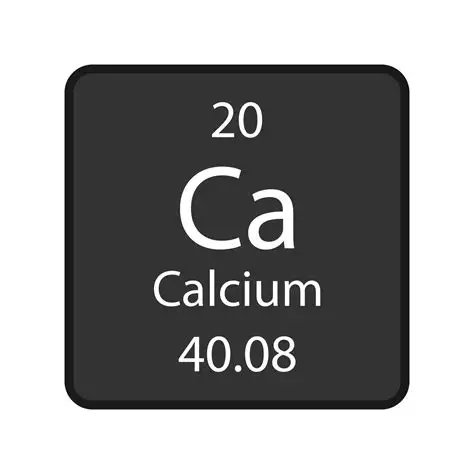

Calcio
Es un elemento químico familia de los metales alcalinotérreos en la tabla periódica. Está signado con el símbolo Ca y una masa atómica de 40,078, conocido en la Ca tabla periodica como un componente esencial para la vida.
Para que sirve
-
Es un tanto duro en comparación con otros alcalinos, hasta 1,75 en la escala de Mohs.
-
Es baja, pero en grandes concentraciones provoca envenenamiento y descalcificación.
-
El metabolismo del calcio está formado con 20 electrones, 20 protones y 20 neutrones que desbordan energía.
Tabla Periodica.
